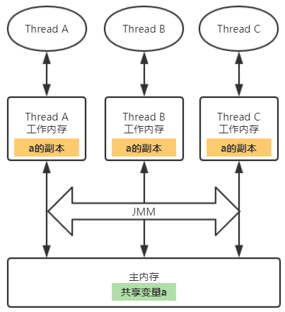
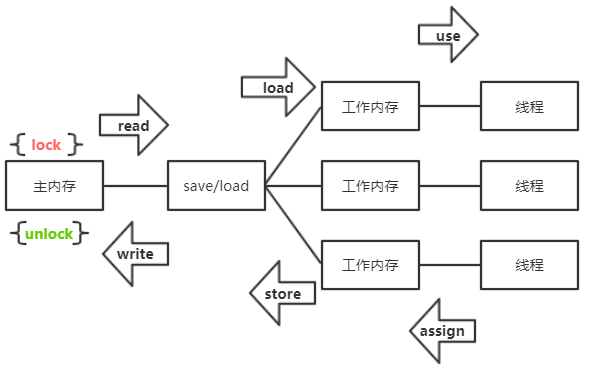

理解Java内存模型是深入学习Java并发不可或缺的部分。Java内存模型即Java Memory Model，简称为JMM，定义了多线程之间共享变量的可见性以及如何在需要的时候对共享变量进行同步。
JMM规定Java线程间的通信采用共享内存的方式。在Java中，所有成员变量、静态变量和数组元素都存储在堆内存中，堆内存在线程之间共享，所以它们通常也称为共享变量。JMM定义了线程和主内存之间的抽 象关系：线程之间的共享变量存储在主内存（Main Memory）中，每个线程都有一个私有的本地内存（Local Memory，或者也可以称为工作内存 Work Memory），本地内存中存储了该线程以读/写共享变量的副本。本地内存是JMM的一个抽象概念，并不真实存在。它涵盖了缓存、写缓冲区、寄存器以及其他的硬件和编译器优化。
JMM抽象
JMM的抽象示意图如下所示：

多个线程同时对同一个共享变量进行读写的时候会产生线程安全问题。那为什么CPU不直接操作内存，而要在CPU和内存间加上各种缓存和寄存器等缓冲区呢？因为CPU的运算速度要比内存的读写速度快得多，如果CPU直接操作内存的话势必会花费很长时间等待数据到来，所以缓存的出现主要是为了解决CPU运算速度与内存读写速度不匹配的矛盾。
内存间交互协议
JMM规定了主内存和工作内存间具体的交互协议，即一个变量如何从主内存拷贝到工作内存、如何从工作内存同步到主内存之间的实现细节，这主要包含了下面8个步骤：

lock（锁定）：作用于主内存的变量，把一个变量标识为一条线程独占状态。
unlock（解锁）：作用于主内存变量，把一个处于锁定状态的变量释放出来，释放后的变量才可以被其他线程锁定。
read（读取）：作用于主内存变量，把一个变量值从主内存传输到线程的工作内存中，以便随后的load动作使用
load（载入）：作用于工作内存的变量，它把read操作从主内存中得到的变量值放入工作内存的变量副本中。
use（使用）：作用于工作内存的变量，把工作内存中的一个变量值传递给执行引擎，每当虚拟机遇到一个需要使用变量的值的字节码指令时将会执行这个操作。
assign（赋值）：作用于工作内存的变量，它把一个从执行引擎接收到的值赋值给工作内存的变量，每当虚拟机遇到一个给变量赋值的字节码指令时执行这个操作。
store（存储）：作用于工作内存的变量，把工作内存中的一个变量的值传送到主内存中，以便随后的write的操作。
write（写入）：作用于主内存的变量，它把store操作从工作内存中一个变量的值传送到主内存的变量中。
这8个步骤必须符合下述规则：
不允许read和load，store和write操作之一单独出现。
不允许一个线程丢弃它最近的assign操作。即变量在工作内存中改变了账号必须把变化同步回主内存
一个新的变量只允许在主内存中诞生，不允许工作内存直接使用未初始化的变量。
一个变量同一时刻只允许一条线程进行lock操作，但同一线程可以lock多次，lock多次之后必须执行同样次数的unlock操作
如果对一个变量进行lock操作，那么将会清空工作内存中此变量的值。
不允许对未lock的变量进行unlock操作，也不允许unlock一个被其它线程lock的变量
如果一个变量执行unlock操作，必须先把此变量同步回主内存中。
指令重排
在执行程序时，为了提高性能，编译器和处理器常常会对指令做重排序。从Java源代码到最终实际执行的指令序列，会分别经历下面3种重排序：
编译器优化的重排序。编译器在不改变单线程程序语义的前提下，可以重新安排语句的执行顺序。
指令级并行的重排序。现代处理器采用了指令级并行技术（Instruction-LevelParallelism，ILP）来将多条指令重叠执行。如果不存在数据依赖性，处理器可以改变语句对应机器指令的执行顺序。
内存系统的重排序。由于处理器使用缓存和读/写缓冲区，这使得加载和存储操作看上去可能是在乱序执行。
如果两个操作访问同一个变量，其中一个为写操作，此时这两个操作之间存在数据依赖性。 编译器和处理器不会改变存在数据依赖性关系的两个操作的执行顺序，即不会重排序。不管怎么重排序，单线程下的执行结果不能被改变，编译器、runtime和处理器都必须遵守as-if-serial语义。
内存屏障
通过插入内存屏障（Memory Barrier）可以阻止特定类型的指令重排。JMM将内存屏障划分为四种：
| 屏障类型 | 示例 | 描述 |
|---|---|---|
| LoadLoad Barriers | Load1-LoadLoad-Load2 | Load1数据装载过程要先于Load2及所有后续的数据装载过程 |
| StoreStore Barriers | Store1-StoreStore-Store2 | Store1刷新数据到内存的过程要先于Strore2及后续所有刷新数据到内存的过程 |
| LoadStore Barriers | Load1-LoadStore-Store2 | Load1数据装载要先于Strore2及后续所有刷新数据到内存的过程 |
| StoreLoad Barriers | Store1-StoreLoad-Load2 | Store1刷新数据到内存的过程要先于Load2及所有后续的数据装载过程 |
Java中volatile关键字的实现就是通过内存屏障来完成的。
happens-before
从jdk5开始，java使用新的JSR-133内存模型，基于happens-before的概念来阐述操作之间的内存可见性。
在JMM中，如果一个操作的执行结果需要对另一个操作可见，那么这两个操作之间必须要存在happens-before关系，这个的两个操作既可以在同一个线程，也可以在不同的两个线程中。
与程序员密切相关的happens-before规则如下：
程序顺序规则：一个线程中的每个操作，happens-before于该线程中任意的后续操作。
监视器锁规则：对一个锁的解锁操作，happens-before于随后对这个锁的加锁操作。
volatile域规则：对一个volatile域的写操作，happens-before于任意线程后续对这个volatile域的读。
传递性规则：如果 A happens-before B，且 B happens-before C，那么A happens-before C。
注意：两个操作之间具有happens-before关系，并不意味前一个操作必须要在后一个操作之前执行！仅仅要求前一个操作的执行结果，对于后一个操作是可见的，且前一个操作按顺序排在后一个操作之前。
参考自：Java并发编程的艺术